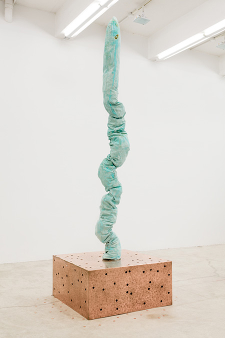

OPENING TONIGHT:

Jory Rabinovitz
Eighty Three
April 18 - May 31, 2014
Opening reception: Friday, April 18, 6 - 8 pm
In 1983, the U.S. government began minting pennies with a ratio of 97.5% zinc and 2.5% copper—an inverse of the previous formula of 95% copper and 5% zinc. The coin had become increasingly more valuable as a commodity of copper than as the molecule of a fiat currency. This decision would ensure to repress speculative desires to hoard, melt and debase the coin. Martos Gallery is pleased to present Eighty Three, a solo exhibition of new works by Jory Rabinovitz, on view from April 18 through May 31 with an opening reception on Friday, April 18 from 6 - 8 pm.
In this new body of work, Rabinovitz starts with common US one-cent coins. First separating pre and post 1983 coins, he then refines them to their base metal, copper and zinc, then oxidizes them to produce pigment—copper making Viridian Green and Zinc producing Zinc White. The pigments are bonded in place by fabric, brick and concrete and the cameos of the coins etched onto the metals.
The Atom and The Void
Democritus once said, “Nothing exists except atoms and voids; everything else is just opinion.”
I personally like the way 8 and 3 look next to each other. I like to think they look like handcuffs coming undone. Years ago, I enjoyed picturing the pair as a line seeing an infinity symbol and standing to its left (our right) and trying really hard to mimic it while pathetically failing. Whatever the case, aside from each number having allusions to parts of anatomy, starting with the letter B—that oddly enough looks like many of those body parts—there always seems to be some kind of binate between the two numbers. I've since learned not to anthropomorphize numbers; it’s a bad habit.
One day a few summers ago, I got a letter from a hospital where I had received treatment. I opened it and can only remember seeing an owed balance starting with the number 83, followed by zeros. The total sum of digits being one hand count (sorry, I don’t like to say the number out loud). It may have been caused by the palpitations in my heart, but a vision came to me. I could acutely feel the blood pump through my veins—so much so that I could almost see it. As I looked from the paper to the sun coming through my window, the number burned into my retina and remained in front of the vibrant red hue of my closing eyelids. The number broke down into individual tally marks, then slowly into circles and back to lines, almost like a dancing binary code. Then it was as if I could see every cell making up my own body at once.
The cells turned from small coin-like shapes to some generic textbook or CGI rendering of blood cells. This morphing happened faster and faster until both became some kind of hybrid I know I had never seen before. They became a mobile army, and I felt an omnipotent corporeal control. When I opened my eyes all objects in my room appeared to be made up of this substance. It was as if all metaphorical content and actual material relations had fused and were indistinguishable. The illusion subsided, and I saw the little handcuffs and then they went back to being an 8 and a 3. I contemplated how I could ever pay this debt. I still haven’t.
For additional information please email info@martosgallery.com or call 212-560-0570.
Martos Gallery
540 West 29th Street
New York, NY
10001
212-560-0670